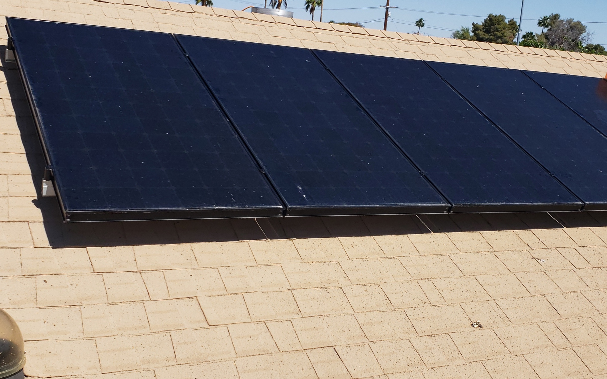
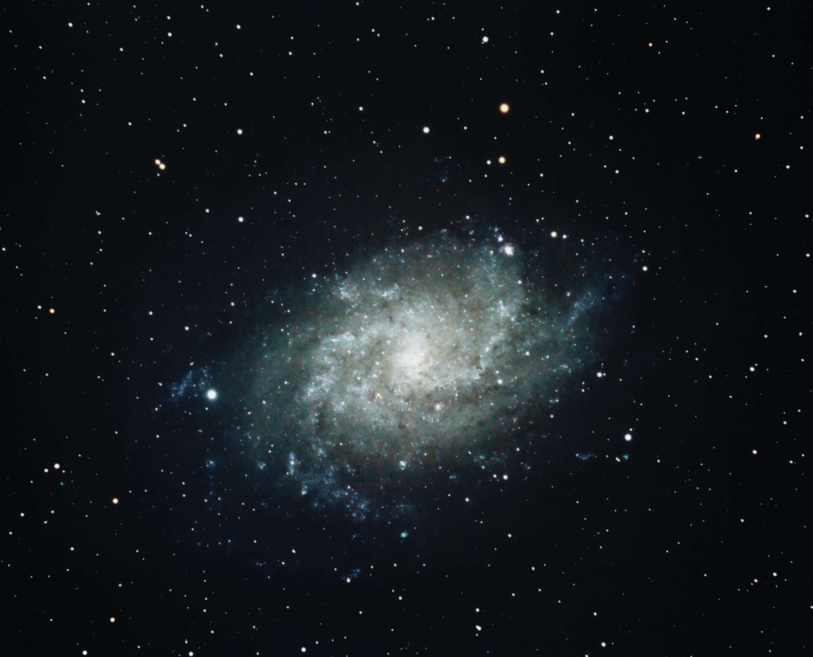
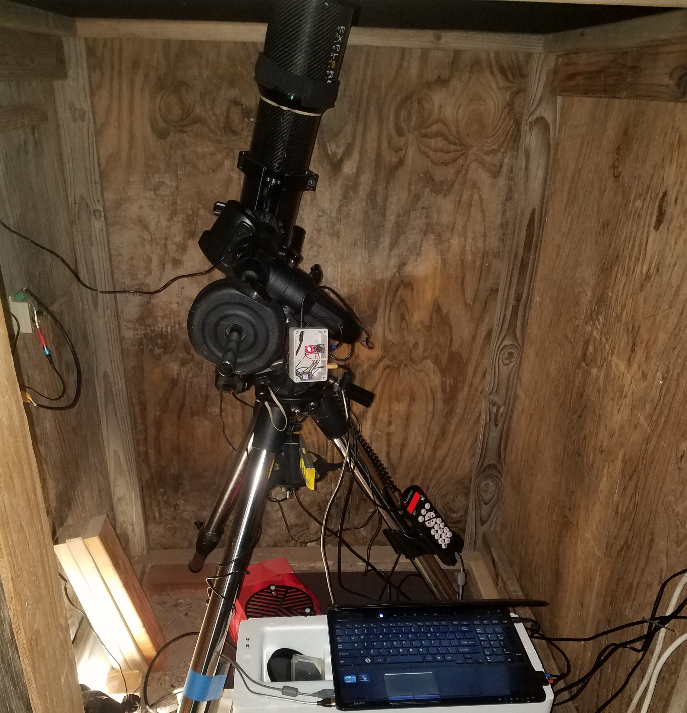
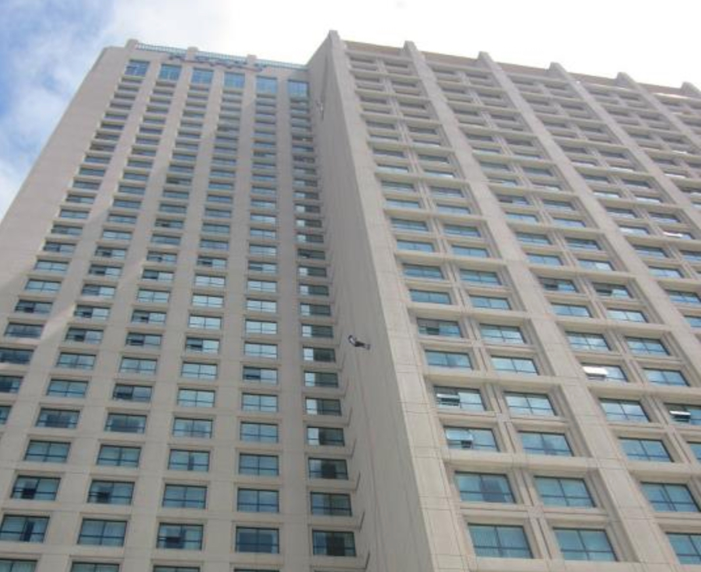

Off-grid Solar Battery System
I started building an off-grid solar battery system for protection from power outages. In the Arizona heat it is essential to have a refrigerator and air conditioner.
Astrophotography
A few years ago I jumped down the rabbit hole that is astrophotography. Spending many nights in dark cold places on mouintain tops throughout the southwest I would speak sweetly to and sometimes curse my equipment and my freezing hands trying to see backwards in time.
Remote Telescope Observatory
I am designing a semi-portable remote operated telescope observatory designed to be small, light and cheap while still yielding great results. A 102mm carbon fiber triplet refractor on a Celestron AVX mount inhabit the prototype observatory. The observatory will have to automatically protect the equipment from snow loads, wind and temporary loss of internet signal.
About Me
I am an electical engineering student at Arizona State University in my junior year. I am a veteran of the U.S. Navy Seabees. I developed an interst in the ability to live off grid addressing both preparedness and the move to sustainable energy. This includes growing food, producing energy at home with solar and trying to throw away less and recycle more.
